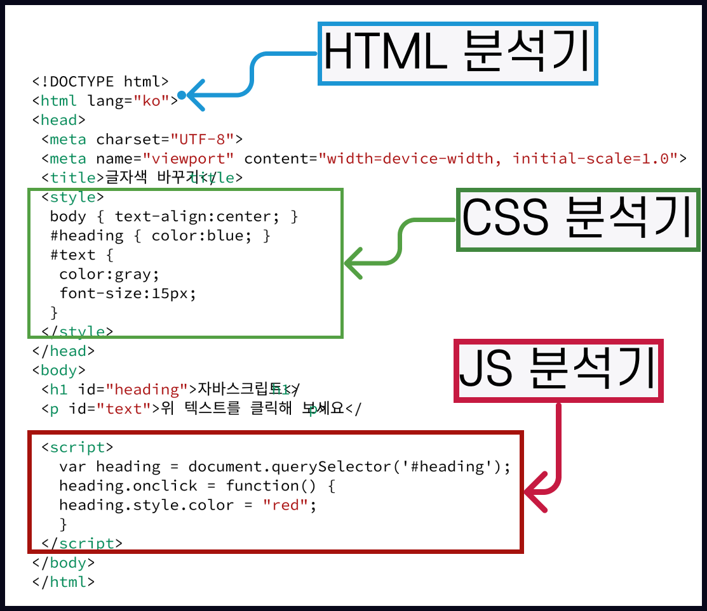

#
1. 자바스크립트의 시작
#
목차
1. 자바스크립트의 역할 1.1. 웹의 요소 제어 1.2. 웹 애플리케이션 제작 1.3. 다양한 라이브러리의 사용 1.4. 서버개발
2. 브라우저에 삽입하기 2.1. 웹문서안에 script 태그로 넣기 2.1.1. 예제 2.1.2. 예제
3. 자바스크립트의 기본 용어
-3.0.1. 예제 4. 입출력하기 4.1. 알림창 4.1.1. 예제
4.2. 확인창 4.2.1. 예제
4.3. 프롬프트창 4.3.1. 예제
4.4. document.write 4.4.1. 예제 4.4.2. 예제 4.4.2.1. ∎ 식별자 4.4.2.2. ∎ 식별자 표기로 구분하는 표현식
4.5. console.log 4.5.1. 예제
4.6. 오류확인 4.6.1. 4.6.1 예제
4.7. 자바스크립트 코딩 컨벤션(convention) 4.7.1. 구글의 스타일가이드 4.7.2. 에어비앤비의 스타일가이드-공식 4.7.3. 에어비앤비의 스타일가이드-번역 4.7.4. 자바스크립트 소스를 작성할때 지켜야할 규칙 4.7.4.1. 들여쓰기 4.7.4.2. 세미콜론 4.7.4.3. 공백의 사용 4.7.4.4. 주석의 활용 4.7.4.5. 식별자의 규칙 4.7.4.5.1. 예시 4.7.4.5.2. 규칙 4.7.4.5.3. 관례 4.7.4.5.3.1. 예시
#
1. 자바스크립트의 역할
자바스크립트는 웹의 초창기 시절부터 지금까지 웹브라우저에서 꾸준히 사용해온 언어이다. 또한 계속 발전하고 있다.
#
1.1. 웹의 요소 제어
- html은 내용을 구성한다
- css 는 디자인을 지정한다.
- js는 요소를 움직이거나 데이터를 동적으로 변경한다.
#
1.2. 웹 애플리케이션 제작
과거의 웹이 단순한 정보 제공이 목적이었다면 근대의 웹은 사용자와의 상호작용을 하며 애플리케이션 처럼 동작하고 있다.
웹 브라우저 내에서 문서작성이나 그림을 그릴수 있으며 게임도 할수 있다.
낯선 곳을 찾아 갈때 검색하는 온라인 지도의 길 찾기 서비스도 애플리케이션 로그인 인증 서비스도 모두 자바스크립트로 구현한다.
#
1.3. 다양한 라이브러리의 사용
웹 플랫폼 중심의 서비스가 늘어나면서 산업이 발전함에 따라 과거에는 서버에서 했던 일들을 이제는 클라이언트 에서도 할수 있게 되었다.
리액트, 앵귤러, 뷰, 제이쿼리등 웹 애플리케이션 개발시 사용할수 있는 다양한 프레임워크/라이브러리 들이 있다.
#
1.4. 서버개발
자바스크립트는 기본적으로 사용자 컴퓨터에서 동작하는 클라이언트 전용 프로그램 이었으나 구글에서 개발한 Nodejs의 출시로 서버프로그램의 제작이 가능하게 되었다.
예전 백앤드 개발시 PHP, java, 닷넷을 사용하였으나 요즘은 자바스크립트 만으로도 백엔드 개발이 가능하다.
이에 따라 자바스크립트는 더욱 개발 생태계에서 강력한 언어가 되었다.
프런트와 백엔드를 모두 개발할수 있는 사람을 풀스택 개발자라고 한다.
#
2. 브라우저에 삽입하기
웹브라우저에는 자바스크립트 소스를 읽고 처리하는 해석기 (JavaScript Interpreter) 가 있다.
따라서 자바스크립트 소스는 웹문서에 script 태그를 이용해서 작성할수 있다.
#
2.1. 웹문서안에 script 태그로 넣기
소스코드가 짧을 경우 간단히 작성히 용이.
위치는 웹문서 어디든 상관없으며 삽입된 위치 그자리에서 바로 스크립트가 실행된다.
<script>는 하나의 문서에 여러개 사용할수 있다.자바스크립트는 웹문서에서 이미지나 텍스트 등의 요소를 제어하는 경우가 많으므로 해당 요소들을 모두 표시후 실행하는 것이 좋다. 그래서
</body>직전에 추가 한다.자바스크립트는 대소문자를 구별한다. 작성시 대소문자를 주의하자
#
2.1.1. 예제
내부 자바스크립트 사용하기
<!DOCTYPE html>
<html lang="ko">
<head>
<meta charset="UTF-8">
<meta name="viewport" content="width=device-width, initial-scale=1.0">
<title>글자색 바꾸기</title>
<style>
body { text-align:center; }
#heading { color:blue; }
#text {
color:gray;
font-size:15px;
}
</style>
</head>
<body>
<h1 id="heading">자바스크립트</h1>
<p id="text">위 텍스트를 클릭해 보세요</p>
<script>
var heading = document.querySelector('#heading');
heading.onclick = function() {
heading.style.color = "red";
}
</script>
</body>
</html>위의 예제처럼 문서 내부에 작성시 작성은 편하나 수정할때 필요한 코드를 찾아보기 어렵다.
#
2.1.2. 예제
외부 자바스크립트 사용하기
<!DOCTYPE html>
<html lang="ko">
<head>
<meta charset="UTF-8">
<meta name="viewport" content="width=device-width, initial-scale=1.0">
<title>글자색 바꾸기</title>
<style>
body { text-align:center; }
#heading { color:blue; }
#text {
color:gray;
font-size:15px;
}
</style>
</head>
<body>
<h1 id="heading">자바스크립트</h1>
<p id="text">위 텍스트를 클릭해 보세요</p>
<script src="js/change-color.js"></script>
</body>
</html>
# 🔴 웹브라우저에서 스크립트를 해석하는 과정
웹문서에 자바스크립트 코드가 포함 되어있으면 웹브라우저는 어떤과정으로 해석하게 되는지 알아보자
웹브라우저는
<!DOCTYPE html>을 보고 문서가 웹문서라는것을 알게 된다.
그리고<html>태그 사이의 내용을 html 표준에 맞춰 읽기 시작한다
<html lang="ko">html 태그의 순서와 포함 관계를 확인한다.
head 태그와 body 태그 사이에 마크업 되어있는 요소를 확인하며 태그간의 관계를 분석한다.태그의 분석이 끝나면
<style>태그의 정보를 분석한다.
<script>태그를 웹브라우저에 내장된 자바스크립트 해석기로 넘긴다.
자바스크립트 해석기에서는<script>사이의 소스를 해석2에서 분석한 html 와 3에서 분석한 css 정보를 웹 브라우저 화면에 표시
자바스크립트 텍스트 클릭시 브라우저에서 해석한 자바스크립트의 실행결과를 화면에 표시함
#
3. 자바스크립트의 기본 용어
자바스크립트의 명령어는 식(expression)과 문 (statement) 으로 나뉜다.
식이란
- 값을 만들어 낼수 있는 모든것
- 변수에 저장이 가능함
문이란
- 명령
- 끝에 ; 를 붙인다.
- 조건문, 제어문...
넓은 의미에서 '문'은 값이나 식을 포함한다
#
3.0.1. 예제
자바스크립트의 식 작성하기
[03]
inch * 2.54; //연산식
('안녕하세요'); //문자열
5; //숫자
#
4. 입출력하기
#
4.1. 알림창
사용자에게 알림메시지를 띄우는 함수
alert(메시지)
#
4.1.1. 예제
<!DOCTYPE html>
<html lang="ko">
<head>
<meta charset="UTF-8" />
<meta name="viewport" content="width=device-width, initial-scale=1.0" />
<title>alert문</title>
</head>
<body>
<script>
alert('안녕하세요?');
</script>
</body>
</html>
#
4.2. 확인창
사용자에게 확인이나 취소의 의사결정을 전달받을수 있는 함수
conform(메시지)
#
4.2.1. 예제
<!DOCTYPE html>
<html lang="ko">
<head>
<meta charset="UTF-8" />
<meta name="viewport" content="width=device-width, initial-scale=1.0" />
<title>confirm</title>
</head>
<body>
<script>
var reply = confirm('정말 배경 이미지를 바꾸겠습니까?');
</script>
</body>
</html>
#
4.3. 프롬프트창
사용자에게 텍스트형태의 데이터를 입력받을수 있는 함수
prompt(메시지)또는prompt(메시지,기본값)
#
4.3.1. 예제
<!DOCTYPE html>
<html lang="ko">
<head>
<meta charset="UTF-8" />
<meta name="viewport" content="width=device-width, initial-scale=1.0" />
<title>prompt</title>
</head>
<body>
<script>
var name = prompt('이름을 입력하세요.', '아무개');
var name = prompt('이름을 입력하세요.');
</script>
</body>
</html>
#
4.4. document.write
document (웹문서).write(쓰다)명령문
prompt(메시지)또는prompt(메시지,기본값)
#
4.4.1. 예제
<!DOCTYPE html>
<html lang="ko">
<head>
<meta charset="UTF-8" />
<meta name="viewport" content="width=device-width, initial-scale=1.0" />
<title>document.write</title>
</head>
<body>
<script>
document.write('<h1>안녕하세요</h1>');
</script>
</body>
</html>
#
4.4.2. 예제
<!DOCTYPE html>
<html lang="ko">
<head>
<meta charset="UTF-8" />
<meta name="viewport" content="width=device-width, initial-scale=1.0" />
<title>Welcome</title>
</head>
<body>
<h1>어서오세요</h1>
<script>
var name = prompt('이름을 입력하세요.');
document.write('<b><big>' + name + '</big></b>님, 환영합니다.');
</script>
</body>
</html>
#
4.4.2.1. ∎ 식별자
08 예제의 name 과 같은 변수명을 우리는 식별자라고 한다.
식별자: 프로그래밍 언어에서 이름을 붙일 때 사용하는 단어.
주로 변수명이나 함수명 등으로 사용
• 키워드 사용 불가
• 숫자로 시작 불가
• 특수 문자는 _와 $만 허용
• 공백 문자를 포함 불가
식별자를 만드는 일반적인 관례
• 클래스의 이름은 항상 대문자로 시작
• 변수와 인스턴스, 함수, 메소드의 이름은 항상 소문자로 시작
• 여러 단어로 이루어진 식별자는 각 단어의 첫 글자를 대문자
#
4.4.2.2. ∎ 식별자 표기로 구분하는 표현식
#
4.5. console.log
console.log()
괄호안의 내용을 콘솔 창에 표시
콘솔 창은 웹 브라우저의 개발자 도구 창에 포함된 공간으로 오류를 발견한거나 변수값을 확인할수 있다.
console.log()의 소괄호 내에 따옴표를 넣어 텍스트를 표시하거나 식별자를 넣어 값을 출력해 볼수 있다.
#
4.5.1. 예제
<!DOCTYPE html>
<html lang="ko">
<head>
<meta charset="UTF-8" />
<meta name="viewport" content="width=device-width, initial-scale=1.0" />
<title>Welcome</title>
</head>
<body>
<h1>어서오세요</h1>
<script>
var name = prompt('이름을 입력하세요.');
console.log(name + '님, 환영합니다.');
</script>
</body>
</html>
#
4.6. 오류확인
실행결과가 나오지 않을경우 콘솔창을 활용하여 오류를 확인하자
#
4.6.1. 4.6.1 예제
<!DOCTYPE html>
<html lang="ko">
<head>
<meta charset="UTF-8" />
<meta name="viewport" content="width=device-width, initial-scale=1.0" />
<title>What time is it?</title>
<style>
body {
font-size: 2em;
text-align: center;
}
</style>
</head>
<body>
<script>
var now = new Date();
var display = now.toLocaleTimeString();
document.writ('현재 시각은 ' + display);
</script>
</body>
</html><!DOCTYPE html>
<html lang="ko">
<head>
<meta charset="UTF-8" />
<meta name="viewport" content="width=device-width, initial-scale=1.0" />
<title>What time is it?</title>
<style>
body {
font-size: 2em;
text-align: center;
}
</style>
</head>
<body>
<script>
var now = new Date();
var display = now.toLocaleTimeString();
document.**write**("현재 시각은 " + display);
</script>
</body>
</html>우측에 오류가 발생한 행이 나오며 에디터에서 해당 줄번호로 이동하여 코드를 수정할수 있다.
#
4.7. 자바스크립트 코딩 컨벤션(convention)
자바스크립트는 문법에 맞게 코딩하는 것도 중요하지만 가독성을 유지하는 것도 중요하다.
코드의 가독성을 유지하려면 규칙을 지켜야 한다.
이런 코딩 규칙을 코딩 컨벤션, 코딩 스타일가이드 라고 한다.
#
4.7.1. 구글의 스타일가이드
#
4.7.2. 에어비앤비의 스타일가이드-공식
#
4.7.3. 에어비앤비의 스타일가이드-번역
#
4.7.4. 자바스크립트 소스를 작성할때 지켜야할 규칙
#
4.7.4.1. 들여쓰기
HTML, CSS 처럼 자바스크립트의 소스코드 작성시에도 들여쓰기를 하여 소스간의 포함관계를 표시한다.
들여쓰기는 공백4칸에서 2칸을 사용한다.
#
4.7.4.2. 세미콜론
단문의 경우 세미콜론을 생략해도 실행은 된다.
하지만 육안으로 쉽게 문장의 구분을 식별할수 있게 하기위해 세미콜론을 하도록 한다.
소스는 읽기 쉽도록 한줄에 한문장만 작성한다.
[11]
var n = 10; //👎🏻
var n = 10; //👍🏻
var n = 10;
var sum = 0; //👎🏻들여쓰기는 공백4칸에서 2칸을 사용한다.
#
4.7.4.3. 공백의 사용
예약어, 연산자, 값 사이에 공백을 넣어 쉽게 식별할수 있게 한다.
[12]
var sum = 2; //👎🏻
var num = sum + 10; //👎🏻
var n = 10; //👍🏻
var sum = n + 10; //👍🏻
#
4.7.4.4. 주석의 활용
소스코드를 잘 설명하는 주석을 작성한다
[13]
var today = new Date(); //현재날짜 가져오기
var h = today.getHours(); //시간추출 하기
/*
현재 날짜를 가져와 시와 분,초를 추출하고 화면에 표시하는 함수
*/
function startTime() {}
#
4.7.4.5. 식별자의 규칙
식별자(identifier) : 변수, 함수, 속성등을 구별하기 위해 이름을 붙인 단어
#
4.7.4.5.1. 예시
[14]
// name : 식별자
var name = prompt ("이름을 입력하세요")'
#
4.7.4.5.2. 규칙
• 키워드 사용 안됨
• 숫자로 시작 불가
• 특수 문자는 _와 $만 허용
• 공백 문자를 포함할 수 없음
#
4.7.4.5.3. 관례
• 클래스의 이름은 항상 대문자로 시작
• 변수와 인스턴스, 함수, 메소드의 이름은 항상 소문자로 시작
• 여러 단어로 이루어진 식별자는 두번째 단어의 첫 글자를 대문자
#
4.7.4.5.3.1. 예시
[15]
num1; //영문으로 시작하는 경우
_doSumthing; // 언더바로 시작하는 camel_case
checkTime(); // camel_case
$isVisible; //$로 시작하는 camel_case
has_children; //snake_case
IsAnimate; //pascal_case
click - handler; //kebab_case